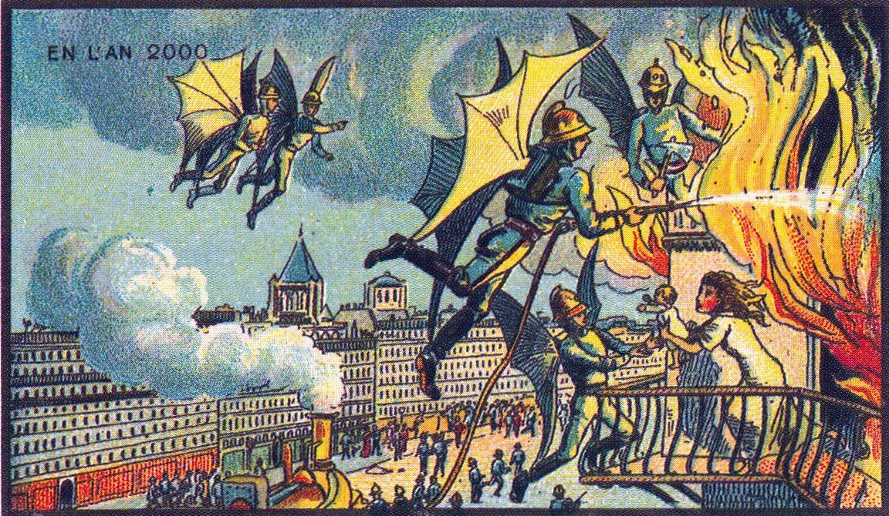
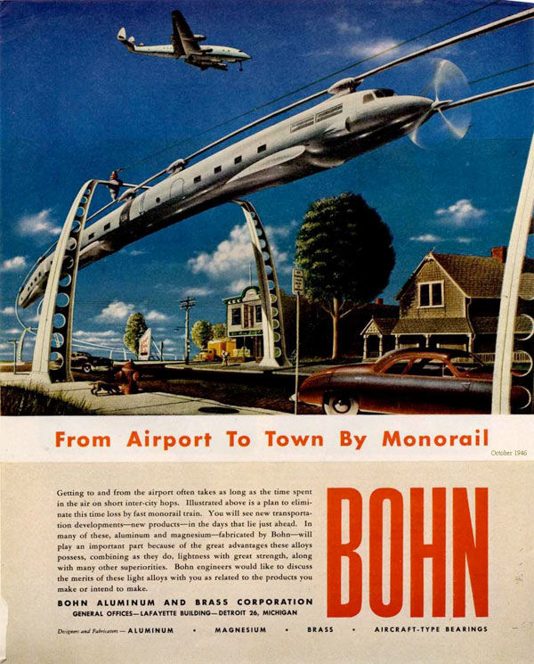

Vue du passé
La dictée automatisée
"Dans cent ans, un homme d'affaires s'assoira devant une machine et dira:
-Cher Monsieur, votre demande du 15 de ce mois a été reçue. Les marchandises ont été commandées-
Et la machine écrira! Imaginez. Pas de sténographe, pas de dactylo, le mécanisme se mettra en marche rien que par la parole."
C’est ce qui a été prédit en 1918 dans un article du Saint Johns Daily star. On fait ici allusion à ce qu’on appelle maintenant la synthèse vocale ou encore la reconnaissance vocale. Cette technologie actuelle permet de dicter notre message. Il faut néanmoins relire le message avant de l’envoyer car ces technologies ne sont pas encore tout à fait au point. Nous ne sommes effectivement pas à l’abris d’une coquille ou même d’une erreur de transcription de mots.
Les engins "volant"

En 1900, un peintre a créé plusieurs toiles sur le futur. L’une d’elle représentait un facteur sur un objet volant (un peu comme un oiseau fait de métal et de tissus) en train de livrer le courrier. Nous pouvons bien constater que cette vision était erronée. Les facteurs de nos jours se déplacent toujours en voiture, à vélo ou même à pied mais en aucun cas ils ne volent.
Une autre, un policier équipé d’ailes mécaniques en train d’arrêter des gens dans des petits avions. Là aussi, le peintre c’était trompé. A l’heure actuelle, aucun policier n’a « d’ailes » pour voler et ainsi faire appliquer la loi à tous ceux qui circulent dans leur engin volant.
Encore une autre peinture nous montre des pompiers équipés d'ailes leurs permettant de voler littéralement au secours de gens.
L'éducation
Tous les parents ont déjà connu le problème de faire garder leurs enfants. Mais une société japonaise a imaginé un robot capable de s'occuper des enfants et même d'allaiter les plus petits. D'autres avaient également pensés à des majordomes robotique capable de surveiller les enfants.
Pour ce qui concerne l'école, plus besoin de prof, ni même de cours, un simple casque aurait permis aux élèves d'ingurgiter des quantités phénoménales de matières.
La mobilité

Dans le passé, les gens ont imaginé beaucoup de moyens de se déplacer, notamment un certain nombre de machines volantes individuelles ou de moyens de déplacement sous-marins qui ne verront pas le jour ou qui sont réservés à des professionnels.
Pour ce qui se rapproche le plus de la réalité d'aujourd'hui, c'est la société "Bohn Aluminium and Brass Corporation"(BOHN), une société spécialisée dans l'aluminium et le laiton, qui nous montre plusieurs affiches publicitaires dans les années 40-50. Celles-ci nous présentent des trains à haute vitesse, mais aussi toute sorte d'avions et de bateaux.
La gazette audio

Dans les années 1900, les gens pensaient que dans le futur nous pourrions, à l’aide d’un tourne disque, écouter la gazette locale. Ce n’est pas tout à fait le cas aujourd’hui. Sur ce point, nous avons évoluer plus vite et pouvons donc trouver l’équivalent qui seraient nos podcasts ou simplement les émissions de radio. Ils avaient également déjà pensés à des communications visuelles à distance comme on pourrait le faire aujourd'hui avec skype par exemple.
Les téléphones

Dans le passé, ils imaginaient plutôt des postes de télévision de poche "grande comme une lampe électrique" et grâce auxquels on pourrait directement avoir accès à des émissions sur la politique, la mode, les sports, ou même des mots croisés. Ils montraient déjà les gens dans la rue, tous en train de regarder leur télévision comme aujourd'hui avec leur smartphone, mais également les dangers de l'utilisation de cette télévision au volant.